Leia todo o conteúdo da página e após isso clique no menu de navegação para ir ao questionário, Boa sorte!
Instalação
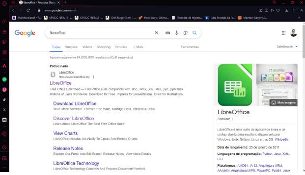 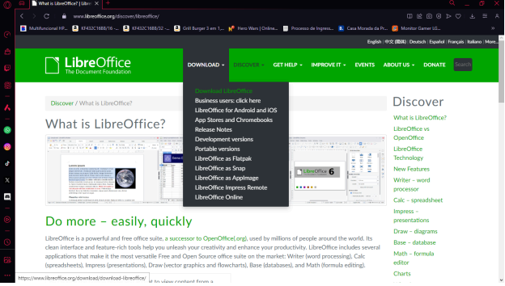 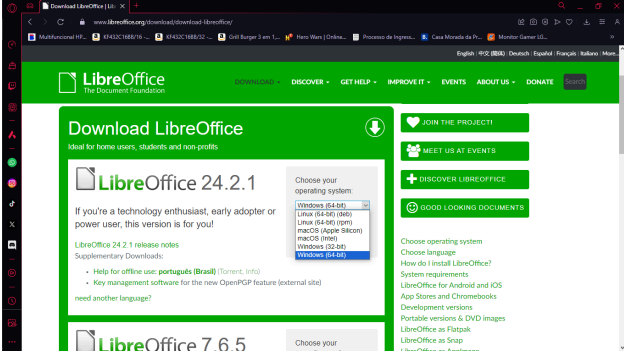 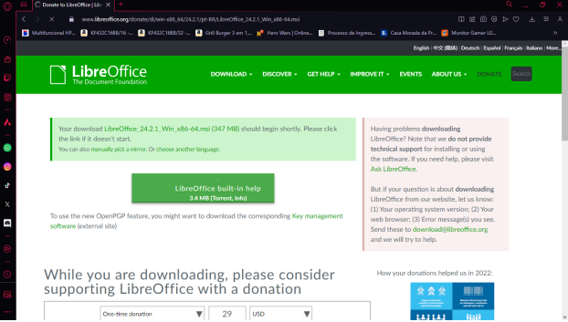 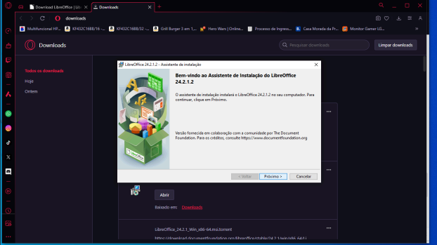 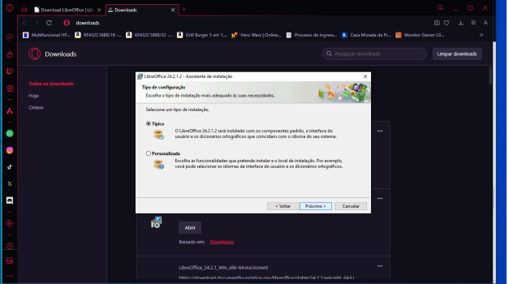 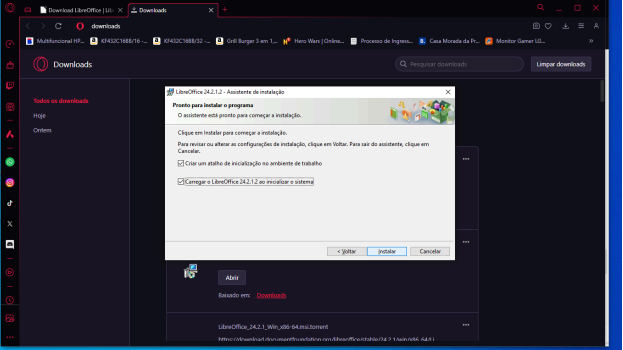 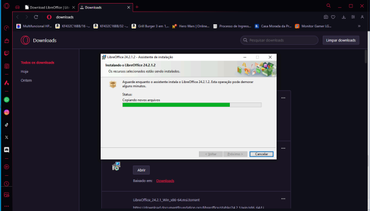 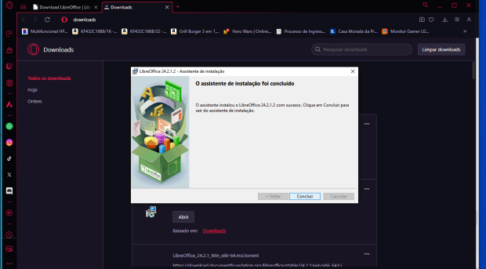 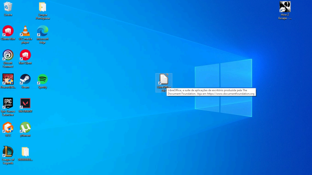 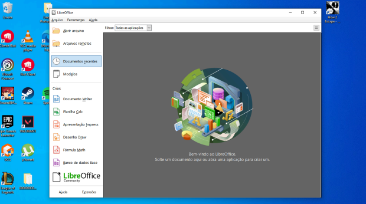Vantagem
- O LibreOffice tem uma ferramenta de desenho, chamada LibreOffice Draw, que não tem concorrentes na suíte Microsoft;
- O LibreOffice é gratuito para download;
- O LibreOffice pede apenas 256 MB de RAM, 1,5 GB de espaço em disco disponível e o mesmo monitor da concorrência. É menos exigente.
Desvantagem
- O Office conta com três programas que não tem versões gratuitas integrando a suíte LibreOffice: OneNote, para notas, Outlook, para gerenciamento de e-mails, e Publisher para layout de páginas;
- O LibreOffice possui detalhes arredondados e é menos amigável.